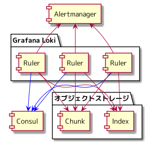

さくらインターネット Advent Calendar 2021 24日目の記事になります。
前回は、 Grafana Loki を使ったログ管理基盤 について書きました。
今回は、 Grafana Loki を使いログを監視したい場合、どのような構成となるのか、 Graylog でのログ監視を考えてみる と比べて何がうれしいのか、 どういう場面でログ監視を使うことになりそうかについて書いていきます。
Grafana Loki を使ったログ管理基盤 と同じバージョンで話しを進めていきます。
Grafana Loki でのログ監視
Grafana Loki では、 Ruler というコンポーネントを使いログ監視を実現します。
Ruler を使えば、 ログ監視が実現できるということはわかりましたが、 Grafana Loki は、クラウドのストレージからログをロードします。 アラートを評価するインターバルは、任意の値を設定できますが、デフォルトは、1分となっています。
例えば、アラートの設定が、 100 あった場合に、それらを評価するためにログのロードが発生すると、 全てのアラートの評価が終わるまでに、1分以上掛かってしまうのではないかという疑問が浮かびました。
Ruler のドキュメントを眺めてみると、 Ruler を複数台動かしアラートの評価をシャーディングできるということがわかりました。
https://grafana.com/docs/loki/v2.2.1/alerting/#scheduling-and-best-practices

Ruler の情報は Consul の KVS に登録され、 それぞれの Ruler は、 Consul の KVS に登録された Ruler の情報を参照し、 他の Ruler と連携することで、アラートの評価をシャーディングします。
シャーディングを有効化した5台の Ruler を起動し、2つのアラートを設定し、 Ruler の挙動を確認してみたところ、5台の Ruler で、2つのアラートがそれぞれ評価されるのではなく、 5台の Ruler のうち、2台の Ruler でアラートが評価されていることを Ruler のログから観測できました。
Consul の KVS に Ruler の情報が登録されていることも確認できました。
https://grafana.com/docs/loki/v2.2.1/configuration/#ruler_config
Ruler の持つシャーディング機能により、 複数台の Ruler に分けて、アラートの評価が可能であるということがわかりました。
Graylog と比べて何がうれしいか
Graylog でのログ監視を考えてみる と 同じ観点で、 Grafana Loki でのログ監視ではどうであるかについて考えてみます。
アラート通知のインタフェースには Alertmanager を使う
Ruler は、 Alertmanager と連携が可能です。 Alertmanager と連携するための追加の開発などは不要です。
メトリクス監視の Alertmanager のルーティング設定を使いたい
Ruler のアラート書式は、 Prometheus と互換性を持った書式となっています。 Prometheus と同じく label, annotation を設定できるため、 Alertmanager のルーティング設定を小さく保てるため、 ルーティング設定の肥大化による運用負荷を回避できます。
- Prometheus: https://prometheus.io/docs/prometheus/latest/configuration/alerting_rules/
- Ruler: https://grafana.com/docs/loki/v2.2.1/alerting/#prometheus-compatible
Grafana Loki で管理しているログを使ったログ監視は、 Grafana Loki のログ監視のために提供されている Ruler を使えば、 アラートの設定から Alertmanager へのアラート発砲まで行えるため、 Graylog では必要になる開発などが一切なく、ログ監視を実現できます。
ログ監視の利用シーン
Grafana Loki では、 Ruler というコンポーネントを使えば、ログ監視が可能であることはわかりました。 「さくらの専用サーバ PHY」では、 VictoriaMetrics を使ったメトリクス管理基盤 を利用したメトリクスを監視を運用しています。 メトリクス監視がある中で、ログ監視が登場するシーンについて考えてみます。 これが正解というわけではなく、なんでもかんでもログを監視するという選択肢にはならなそうだなという雰囲気を感じてもらえたらと思っています。 Prometheus の Exporter を自分なりに分類してみた の内容をイメージしながら、読んでもらえたらと思います。
アプリケーション
ミドルウェアなどもアプリケーションに含み、ログ監視について考えてみます。
内製のアプリケーションであれば、 Exporter を組み込みメトリクスを監視する手段が取れそうです。 Exporter を組み込むという開発をキャッチアップしたり、実装したりする稼動を割けない場合は、 ログに出力し、ログを監視する手段を選択することがありそうです。
OSS を利用している場合は、 Exporter を有無を確認するところからはじまりそうです。 Native exporter の場合は、メトリクスで監視できそうかを確認し、 ログに出力されている内容が、メトリクスにて監視できない場合は、ログを監視することになりそうです。 メトリクスとして監視したい項目を OSS に Pull Request する手段もありそうです。 Pull Request が Merge されるかはわからないので、 ログに監視できる内容がある場合は、ログを監視することになりそうです。
OSS ではない、どこかの製品を使っている場合は、 HTTP API やコマンドラインツールの有無を確認し、 Sidecar exporter を開発し、メトリクスを監視するという手段が取れそうです。 Exporter を開発するという手段が取れない場合は、ログを監視することになりそうです。
アプライアンス
「さくらの専用サーバ PHY」では、 PDU, Firewall, Load Balancer などがアプライアンスに該当します。
これらの機器での標準装備は syslog, SNMP ではないかと思います。 SNMP exporter を使うことで、 SNMP を使ったメトリクスの監視ができそうです。 SNMP で取れない情報があり、それがログに出力される場合、ログを監視することになりそうです。
ネットワーク機器
ユーザーに提供しているスイッチ、サービスを支えるためのスイッチ・ルーターなどが該当します。
これらの機器での標準装備は syslog, SNMP ではないかと思います。 ネットワーク機器の中には HTTP API を持っていたりするものもあるので、 Proxy exporter を開発し、メトリクスを監視するという手段を取ることもありそうです。 HTTP API などが提供されていない場合は、 SNMP exporter による SNMP を使ったメトリクスの監視になりそうです。 SNMP, HTTP API などで情報が取得できず、それがログに出力される場合、ログを監視することになりそうです。
サーバー
ユーザーに提供している物理サーバーを「サーバー」として考えてみます。
IPMI が syslog でログを転送するというのが標準装備なのではないかと思います。 最近だと Redfish が実装されていて、 エンドポイントに HTTP でリクエストするとサーバーのステータスを JSON で取得できたりもします。 Redfish が実装されているサーバーであれば、 Proxy exporter を開発し、メトリクスを監視するという手段が取れそうです。
メトリクスで監視できるのであれば、 ログの監視が登場するシーンは意外に多くなかったりするのかなと思っています。